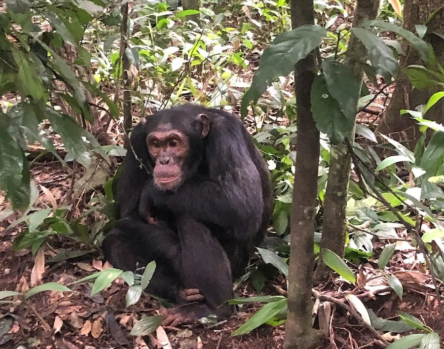

哺乳动物 · 动物界
黑猩猩 Pan troglodytes

与人类亲缘关系最近的灵长类之一，会制作工具取食白蚁，过复杂的社会生活，分布于非洲热带森林。
- 分类
- 门脊索动物门纲哺乳纲目灵长目科人科属黑猩猩属
- 栖息环境
- 热带雨林、山地森林与疏林草原，需要高大乔木过夜
- 地理分布
- 非洲中部，从塞内加尔到乌干达、坦桑尼亚的热带林区
- 保护级别
- IUCN 濒危（EN）
物种志
黑猩猩体长 0.7–1.0 米，直立身高可达 1.2 米，体重 35–70 kg，雄性大于雌性。它全身覆黑色长毛，面部裸露，皮肤随年龄由浅变深，耳大、眉骨突出，前肢比后肢长，既能四足行走也能在树间摆荡。
黑猩猩栖息于非洲中部的热带雨林、疏林草原和山地森林，过“分裂—融合”式的群居生活：一个群落可达 20–100 只，白天分成小群觅食，晚上各自筑巢睡觉。它们是著名的工具使用者，会折断树枝伸进蚁巢“钓”白蚁，也会用石块砸开坚果；雄性会组成巡逻队巡视领地，有时与邻近群落发生冲突。黑猩猩食谱以果实为主，也吃树叶、种子、昆虫和猴类。偷猎、森林砍伐和传染病使野生种群持续下降。
形态与习性
- 食性果实为主，也吃树叶、种子、昆虫和猴类
- 体长0.7–1.0 m，直立身高可达 1.2 m
- 体重35–70 kg
- 寿命野外约 40–50 年
- 繁殖妊娠期约 8 个月，每 5–6 年产 1 仔
- 社会结构分裂—融合式群落，可达 20–100 只
- 工具使用会折枝钓白蚁、用石块砸坚果
趣味知识
- 黑猩猩与人类的基因组相似度约 98.8%，是最近的现生灵长类近亲之一。
- 它们会把树枝修整后伸进蚁巢“钓”白蚁，是典型的工具使用行为。
- 黑猩猩群落白天分散觅食、夜间各自筑巢，被称为分裂—融合社会。
- 雄性会结队巡逻领地边界，遇到邻近群落时可能爆发冲突。